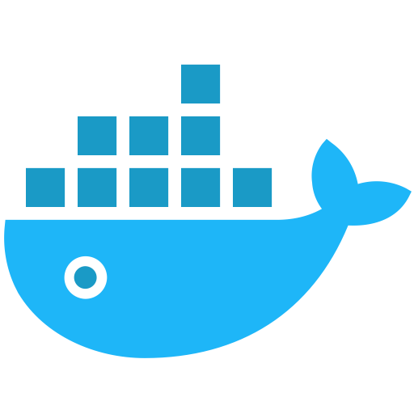

<!DOCTYPE HTML>
<html lang="zh-CN">
<head><meta name="generator" content="Hexo 3.8.0">
    <!--Setting-->
    <meta charset="UTF-8">
    <meta name="viewport" content="width=device-width, user-scalable=no, initial-scale=1.0, maximum-scale=1.0, minimum-scale=1.0">
    <meta http-equiv="X-UA-Compatible" content="IE=Edge,chrome=1">
    <meta http-equiv="Cache-Control" content="no-siteapp">
    <meta http-equiv="Cache-Control" content="no-transform">
    <meta http-equiv="pragma" content="no-cache">
    <meta http-equiv="Cache-Control" content="no-cache, must-revalidate">
    <meta http-equiv="expires" content="Mon Apr 06 2020 02:12:40 GMT+0800 (CST)">
    <meta name="renderer" content="webkit|ie-comp|ie-stand">
    <meta name="apple-mobile-web-app-capable" content="周立的博客 - 关注Spring Cloud、Docker">
    <meta name="apple-mobile-web-app-status-bar-style" content="black">
    <meta name="format-detection" content="telephone=no,email=no,adress=no">
    <meta name="browsermode" content="application">
    <meta name="screen-orientation" content="portrait">
    <meta name="theme-version" content="1.2.3">
    <meta name="root" content="/">
    
    <!--SEO-->

    <meta name="keywords" content="Spring Cloud">


    <meta name="description" content="本篇有一定的学习曲线，建议先花一点时间了解一下前置知识：

Spring Security：http://docs.spring.io/spring-security/site/docs/4.2.2.RELEASE/reference/htmlsingle/
OAuth2（重点），参考文档：h...">


<meta name="robots" content="all">
<meta name="google" content="all">
<meta name="googlebot" content="all">
<meta name="verify" content="all">
    <!--Title-->


<title>Spring Cloud Security系列教程一：入门 | 周立的博客 - 关注Spring Cloud、Docker</title>


    <link rel="alternate" href="../../atom.html" title="周立的博客 - 关注Spring Cloud、Docker" type="application/atom+xml">


    

    


<link rel="stylesheet" href="../../static/css/bootstrap.min-271a649e0635d6fa1b.css">
<link rel="stylesheet" href="../../static/css/font-awesome.min-ac2bebcf7fb5b26.css">
<link rel="stylesheet" href="../../static/css/style-6f3c140f6eee20e6591da00ec0.css">


    


    <script>
        var _hmt = _hmt || [];
        (function() {
            var hm = document.createElement("script");
            hm.src = "https://hm.baidu.com/hm.js?13766878cde148282622871dd245a973";
            var s = document.getElementsByTagName("script")[0];
            s.parentNode.insertBefore(hm, s);
        })();
    </script>


    

</head>

</html>
<!--[if lte IE 8]>
<style>
    html{ font-size: 1em }
</style>
<![endif]-->
<!--[if lte IE 9]>
<div style="ie">你使用的浏览器版本过低，为了你更好的阅读体验，请更新浏览器的版本或者使用其他现代浏览器，比如Chrome、Firefox、Safari等。</div>
<![endif]-->

<body>
    
    <nav class="main-navigation">
    <div class="container">
        <div class="row clearfix">
            <div class="col-md-12 column">
                <nav class="navbar navbar-default" style="background-color:#fff;border:0;margin-bottom:0" role="navigation">
                    <div class="navbar-header">
                        <button type="button" class="navbar-toggle" data-toggle="collapse" data-target="#navbar-collapse-1">
                            <span class="sr-only">切</span>
                            <span class="icon-bar"></span>
                            <span class="icon-bar"></span>
                            <span class="icon-bar"></span>
                        </button>
                        <a class="logo" href="../../index.html">
                            周立的博客
                        </a>
                    </div>

                    <div class="collapse navbar-collapse" style="border:0;" id="navbar-collapse-1">
                        <ul class="nav navbar-nav">
                            
                                
                                    <li>
                                        <a href="../../about.html" target="_blank">
                                            <i class="fa fa-user"></i>
                                            关于我
                                        </a>
                                    </li>
                                
                            
                                
                                    <li>
                                        <a href="../../archives.html" target="_blank">
                                            <i class="fa fa-archive"></i>
                                            归档
                                        </a>
                                    </li>
                                
                            
                                
                                    <li class="dropdown">
                                        <a href="#" class="dropdown-toggle" data-toggle="dropdown" data-hover="dropdown">
                                            <i class="fa fa-fire"></i>
                                            系列课程
                                            <strong class="caret"></strong>
                                        </a>
                                        <ul class="dropdown-menu">
                                            
                                                <li>
                                                    <a href="../../docker/00-docker-lession-index.html" target="_blank">
                                                        <i class="fa "></i>
                                                        Docker系列教程
                                                    </a>
                                                </li>
                                            
                                                <li>
                                                    <a href="../../spring-cloud/spring-cloud-index.html" target="_blank">
                                                        <i class="fa "></i>
                                                        Spring Cloud系列教程
                                                    </a>
                                                </li>
                                            
                                                <li>
                                                    <a href="../../spring-boot/spring-boot-index.html" target="_blank">
                                                        <i class="fa "></i>
                                                        Spring Boot系列教程
                                                    </a>
                                                </li>
                                            
                                        </ul>
                                    </li>
                                
                            
                                
                                    <li class="dropdown">
                                        <a href="#" class="dropdown-toggle" data-toggle="dropdown" data-hover="dropdown">
                                            <i class="fa fa-book"></i>
                                            开源书
                                            <strong class="caret"></strong>
                                        </a>
                                        <ul class="dropdown-menu">
                                            
                                                <li>
                                                    <a href="../../books/rocketmq.html" target="_blank">
                                                        <i class="fa fa-rocket"></i>
                                                        RocketMQ开发者指南
                                                    </a>
                                                </li>
                                            
                                                <li>
                                                    <a href="../../books/skywalking.html" target="_blank">
                                                        <i class="fa fa-skyatlas"></i>
                                                        Skywalking 6.2.0中文文档
                                                    </a>
                                                </li>
                                            
                                        </ul>
                                    </li>
                                
                            
                                
                                    <li class="dropdown">
                                        <a href="#" class="dropdown-toggle" data-toggle="dropdown" data-hover="dropdown">
                                            <i class="fa fa-cog"></i>
                                            工具
                                            <strong class="caret"></strong>
                                        </a>
                                        <ul class="dropdown-menu">
                                            
                                                <li>
                                                    <a href="../../tools/markdown2.html" target="_blank">
                                                        <i class="fa "></i>
                                                        微信排版工具2.0
                                                    </a>
                                                </li>
                                            
                                        </ul>
                                    </li>
                                
                            
                        </ul>
                        
                            <form id="search-form" class="navbar-form navbar-right">
                                <div class="form-group input-group">
                                    <input type="text" id="local-search-input" class="form-control" placeholder="搜我...">
                                    <span class="input-group-btn">
                                        <a class="btn btn-default">
                                            <i class="fa fa-search"></i>
                                        </a>
                                    </span>
                                </div>
                                <div id="local-search-result" class="local-search-result-cls"></div>
                            </form>
                        
                    </div>
                </nav>
            </div>
        </div>
    </div>
</nav>

    <a href="javascript:;" target="_blank">
        
    </a>


    <section class="content-wrap">
        <div class="container">
            <div class="row">
                <main class="col-md-8 main-content m-post">
                    

<p id="process"></p>
<article class="post">
    <div class="post-head">
        <h1 id="Spring Cloud Security系列教程一：入门">
            
                Spring Cloud Security系列教程一：入门
            
        </h1>
        <div class="post-meta">
    
        <span class="categories-meta fa-wrap">
            <i class="fa fa-folder-open-o"></i>
            <a class="category-link" href="javascript:;">Spring Cloud</a>
        </span>
    

    
        <span class="fa-wrap">
            <i class="fa fa-tags"></i>
            <span class="tags-meta">
                
                    <a class="tag-link" href="javascript:;">Spring Cloud</a>
                
            </span>
        </span>
    

    
        
        <span class="fa-wrap">
            <i class="fa fa-clock-o"></i>
            <span class="date-meta">2017/04/01</span>
        </span>
        
            <span class="fa-wrap">
                <i class="fa fa-eye"></i>
                <span id="busuanzi_value_page_pv"></span>
            </span>
        
    
</div>
        
        
    </div>
    
    <div class="post-body post-content" id="post-content">
        
    <div class="toc-article">
        <strong>
            目录
        </strong>
        <div class="toc-content">
            <ol class="toc"><li class="toc-item toc-level-2"><a class="toc-link" href="#准备工作"><span class="toc-text">准备工作</span></a></li><li class="toc-item toc-level-2"><a class="toc-link" href="#编码"><span class="toc-text">编码</span></a></li><li class="toc-item toc-level-2"><a class="toc-link" href="#测试"><span class="toc-text">测试</span></a></li><li class="toc-item toc-level-2"><a class="toc-link" href="#配套代码"><span class="toc-text">配套代码</span></a></li></ol>
        </div>
    </div>


        <p>本篇有一定的学习曲线，建议先花一点时间了解一下前置知识：</p>
<ul>
<li>Spring Security：<a href="javascript:;" target="_blank" rel="noopener">http://docs.spring.io/spring-security/site/docs/4.2.2.RELEASE/reference/htmlsingle/</a></li>
<li>OAuth2（<strong>重点</strong>），参考文档：<a href="javascript:;" target="_blank" rel="noopener">http://www.ruanyifeng.com/blog/2014/05/oauth_2_0.html</a></li>
<li>Spring Security OAuth2，参考文档：<a href="javascript:;" target="_blank" rel="noopener">http://docs.spring.io/spring-boot/docs/1.5.2.RELEASE/reference/htmlsingle/#boot-features-security-oauth2</a></li>
</ul>
<p>熟悉以上前置知识后，我们进入Spring Cloud Security的学习。在本例中，我们来使用GitHub的账号和密码来登录我们编写的应用。</p>
<a id="more"></a>
<h2 id="准备工作"><a href="#准备工作" class="headerlink" title="准备工作"></a>准备工作</h2><p>(1) 前往<a href="javascript:;" target="_blank" rel="noopener">https://github.com/settings/developers</a>，点击“Register a new application”按钮，添加一个应用。点击按钮后，界面如下图所示。</p>
<p></p>
<p>(2) 点击“Register application”按钮，即可出现如下图的界面。</p>
<p></p>
<p>记住这边的Client ID以及Client Secret，后面有用。</p>
<p>至此，准备工作就完成了。</p>
<h2 id="编码"><a href="#编码" class="headerlink" title="编码"></a>编码</h2><p>在这里，我们正式进行编码。</p>
<p>(1) 创建项目，并添加以下依赖：</p>
<figure class="highlight xml"><table><tr><td class="gutter"><pre><span class="line">1</span><br><span class="line">2</span><br><span class="line">3</span><br><span class="line">4</span><br><span class="line">5</span><br><span class="line">6</span><br><span class="line">7</span><br><span class="line">8</span><br><span class="line">9</span><br><span class="line">10</span><br><span class="line">11</span><br><span class="line">12</span><br><span class="line">13</span><br><span class="line">14</span><br><span class="line">15</span><br><span class="line">16</span><br><span class="line">17</span><br><span class="line">18</span><br><span class="line">19</span><br><span class="line">20</span><br><span class="line">21</span><br><span class="line">22</span><br><span class="line">23</span><br><span class="line">24</span><br><span class="line">25</span><br><span class="line">26</span><br><span class="line">27</span><br></pre></td><td class="code"><pre><span class="line"><span class="tag">&lt;<span class="name">parent</span>&gt;</span></span><br><span class="line">	<span class="tag">&lt;<span class="name">groupId</span>&gt;</span>org.springframework.boot<span class="tag">&lt;/<span class="name">groupId</span>&gt;</span></span><br><span class="line">	<span class="tag">&lt;<span class="name">artifactId</span>&gt;</span>spring-boot-starter-parent<span class="tag">&lt;/<span class="name">artifactId</span>&gt;</span></span><br><span class="line">	<span class="tag">&lt;<span class="name">version</span>&gt;</span>1.5.2.RELEASE<span class="tag">&lt;/<span class="name">version</span>&gt;</span></span><br><span class="line">	<span class="tag">&lt;<span class="name">relativePath</span>/&gt;</span></span><br><span class="line"><span class="tag">&lt;/<span class="name">parent</span>&gt;</span></span><br><span class="line"><span class="tag">&lt;<span class="name">dependencies</span>&gt;</span></span><br><span class="line">	<span class="tag">&lt;<span class="name">dependency</span>&gt;</span></span><br><span class="line">		<span class="tag">&lt;<span class="name">groupId</span>&gt;</span>org.springframework.cloud<span class="tag">&lt;/<span class="name">groupId</span>&gt;</span></span><br><span class="line">		<span class="tag">&lt;<span class="name">artifactId</span>&gt;</span>spring-cloud-starter-oauth2<span class="tag">&lt;/<span class="name">artifactId</span>&gt;</span></span><br><span class="line">	<span class="tag">&lt;/<span class="name">dependency</span>&gt;</span></span><br><span class="line">	<span class="tag">&lt;<span class="name">dependency</span>&gt;</span></span><br><span class="line">		<span class="tag">&lt;<span class="name">groupId</span>&gt;</span>org.springframework.cloud<span class="tag">&lt;/<span class="name">groupId</span>&gt;</span></span><br><span class="line">		<span class="tag">&lt;<span class="name">artifactId</span>&gt;</span>spring-cloud-starter-security<span class="tag">&lt;/<span class="name">artifactId</span>&gt;</span></span><br><span class="line">	<span class="tag">&lt;/<span class="name">dependency</span>&gt;</span></span><br><span class="line"><span class="tag">&lt;/<span class="name">dependencies</span>&gt;</span></span><br><span class="line"><span class="tag">&lt;<span class="name">dependencyManagement</span>&gt;</span></span><br><span class="line">	<span class="tag">&lt;<span class="name">dependencies</span>&gt;</span></span><br><span class="line">		<span class="tag">&lt;<span class="name">dependency</span>&gt;</span></span><br><span class="line">			<span class="tag">&lt;<span class="name">groupId</span>&gt;</span>org.springframework.cloud<span class="tag">&lt;/<span class="name">groupId</span>&gt;</span></span><br><span class="line">			<span class="tag">&lt;<span class="name">artifactId</span>&gt;</span>spring-cloud-dependencies<span class="tag">&lt;/<span class="name">artifactId</span>&gt;</span></span><br><span class="line">			<span class="tag">&lt;<span class="name">version</span>&gt;</span>Camden.SR5<span class="tag">&lt;/<span class="name">version</span>&gt;</span></span><br><span class="line">			<span class="tag">&lt;<span class="name">type</span>&gt;</span>pom<span class="tag">&lt;/<span class="name">type</span>&gt;</span></span><br><span class="line">			<span class="tag">&lt;<span class="name">scope</span>&gt;</span>import<span class="tag">&lt;/<span class="name">scope</span>&gt;</span></span><br><span class="line">		<span class="tag">&lt;/<span class="name">dependency</span>&gt;</span></span><br><span class="line">	<span class="tag">&lt;/<span class="name">dependencies</span>&gt;</span></span><br><span class="line"><span class="tag">&lt;/<span class="name">dependencyManagement</span>&gt;</span></span><br></pre></td></tr></table></figure>
<p>即：为应用添加spring-cloud-starter-oauth2、spring-cloud-starter-security两个依赖。</p>
<p>(2) 编写启动类：</p>
<figure class="highlight java"><table><tr><td class="gutter"><pre><span class="line">1</span><br><span class="line">2</span><br><span class="line">3</span><br><span class="line">4</span><br><span class="line">5</span><br><span class="line">6</span><br><span class="line">7</span><br><span class="line">8</span><br><span class="line">9</span><br><span class="line">10</span><br><span class="line">11</span><br><span class="line">12</span><br><span class="line">13</span><br><span class="line">14</span><br><span class="line">15</span><br><span class="line">16</span><br><span class="line">17</span><br><span class="line">18</span><br><span class="line">19</span><br><span class="line">20</span><br><span class="line">21</span><br><span class="line">22</span><br><span class="line">23</span><br><span class="line">24</span><br><span class="line">25</span><br><span class="line">26</span><br><span class="line">27</span><br><span class="line">28</span><br><span class="line">29</span><br><span class="line">30</span><br><span class="line">31</span><br><span class="line">32</span><br><span class="line">33</span><br><span class="line">34</span><br><span class="line">35</span><br><span class="line">36</span><br><span class="line">37</span><br><span class="line">38</span><br><span class="line">39</span><br></pre></td><td class="code"><pre><span class="line"><span class="meta">@SpringBootApplication</span></span><br><span class="line"><span class="meta">@RestController</span></span><br><span class="line"><span class="keyword">public</span> <span class="class"><span class="keyword">class</span> <span class="title">SecurityApplication</span> </span>&#123;</span><br><span class="line">    <span class="function"><span class="keyword">public</span> <span class="keyword">static</span> <span class="keyword">void</span> <span class="title">main</span><span class="params">(String[] args)</span> </span>&#123;</span><br><span class="line">        SpringApplication.run(SecurityApplication.class, args);</span><br><span class="line">    &#125;</span><br><span class="line"></span><br><span class="line">    <span class="meta">@GetMapping</span>(<span class="string">"/welcome"</span>)</span><br><span class="line">    <span class="function"><span class="keyword">public</span> String <span class="title">welcome</span><span class="params">()</span> </span>&#123;</span><br><span class="line">        <span class="keyword">return</span> <span class="string">"welcome"</span>;</span><br><span class="line">    &#125;</span><br><span class="line"></span><br><span class="line">    <span class="meta">@RequestMapping</span>(<span class="string">"/user"</span>)</span><br><span class="line">    <span class="function"><span class="keyword">public</span> Principal <span class="title">user</span><span class="params">(Principal user)</span> </span>&#123;</span><br><span class="line">        <span class="keyword">return</span> user;</span><br><span class="line">    &#125;</span><br><span class="line"></span><br><span class="line">    <span class="meta">@Component</span></span><br><span class="line">    <span class="meta">@EnableOAuth</span>2Sso <span class="comment">// 实现基于OAuth2的单点登录，建议跟踪进代码阅读以下该注解的注释，很有用</span></span><br><span class="line">    <span class="keyword">public</span> <span class="keyword">static</span> <span class="class"><span class="keyword">class</span> <span class="title">SecurityConfiguration</span> <span class="keyword">extends</span> <span class="title">WebSecurityConfigurerAdapter</span> </span>&#123;</span><br><span class="line">        <span class="meta">@Override</span></span><br><span class="line">        <span class="function"><span class="keyword">public</span> <span class="keyword">void</span> <span class="title">configure</span><span class="params">(HttpSecurity http)</span> <span class="keyword">throws</span> Exception </span>&#123;</span><br><span class="line">            http.</span><br><span class="line">                    antMatcher(<span class="string">"/**"</span>)</span><br><span class="line">                    <span class="comment">// 所有请求都得经过认证和授权</span></span><br><span class="line">                    .authorizeRequests().anyRequest().authenticated()</span><br><span class="line">                    .and().authorizeRequests().antMatchers(<span class="string">"/"</span>,<span class="string">"/anon"</span>).permitAll()</span><br><span class="line">                    .and()</span><br><span class="line">                    <span class="comment">// 这里之所以要禁用csrf，是为了方便。</span></span><br><span class="line">                    <span class="comment">// 否则，退出链接必须要发送一个post请求，请求还得带csrf token</span></span><br><span class="line">                    <span class="comment">// 那样我还得写一个界面，发送post请求</span></span><br><span class="line">                    .csrf().disable()</span><br><span class="line">                    <span class="comment">// 退出的URL是/logout</span></span><br><span class="line">                    .logout().logoutUrl(<span class="string">"/logout"</span>).permitAll()</span><br><span class="line">                    <span class="comment">// 退出成功后，跳转到/路径。</span></span><br><span class="line">                    .logoutSuccessUrl(<span class="string">"/"</span>);</span><br><span class="line">        &#125;</span><br><span class="line">    &#125;</span><br><span class="line">&#125;</span><br></pre></td></tr></table></figure>
<p>如代码所示，在这里，我们使用<code>@EnableOAuth2Sso</code> 注解，启用了“基于OAuth2的单点登录”，做了一些安全配置；同时，还定义了两个端点，<code>/welcome</code> 端点返回“welcome”字符串，<code>/user</code> 端点返回当前登录用户的认证信息。</p>
<p>这里说明一下，<code>@EnableOAuth2Sso</code>注解。如果<code>WebSecurityConfigurerAdapter</code>类上注释了<code>@EnableOAuth2Sso</code>注解，那么将会添加身份验证过滤器和身份验证入口。</p>
<ul>
<li>如果只有一个<code>@EnableOAuth2Sso</code>注解没有编写在<code>WebSecurityConfigurerAdapter</code>上，那么它将会为所有路径启用安全，并且会在基于HTTP Basic认证的安全链之前被添加。</li>
<li>详见<code>@EnableOAuth2Sso</code>的注释。</li>
</ul>
<p>(3) 编写配置文件</p>
<figure class="highlight yaml"><table><tr><td class="gutter"><pre><span class="line">1</span><br><span class="line">2</span><br><span class="line">3</span><br><span class="line">4</span><br><span class="line">5</span><br><span class="line">6</span><br><span class="line">7</span><br><span class="line">8</span><br><span class="line">9</span><br><span class="line">10</span><br><span class="line">11</span><br><span class="line">12</span><br><span class="line">13</span><br><span class="line">14</span><br><span class="line">15</span><br><span class="line">16</span><br><span class="line">17</span><br><span class="line">18</span><br><span class="line">19</span><br></pre></td><td class="code"><pre><span class="line"><span class="attr">server:</span></span><br><span class="line"><span class="attr">  port:</span> <span class="number">8080</span></span><br><span class="line"><span class="attr">security:</span></span><br><span class="line"><span class="attr">  user:</span></span><br><span class="line"><span class="attr">    password:</span> <span class="string">user</span>  <span class="comment"># 直接登录时的密码</span></span><br><span class="line"><span class="attr">  ignored:</span> <span class="string">/</span></span><br><span class="line"><span class="attr">  sessions:</span> <span class="string">never</span>   <span class="comment"># session策略</span></span><br><span class="line"></span><br><span class="line"><span class="attr">  oauth2:</span></span><br><span class="line"><span class="attr">    sso:</span></span><br><span class="line"><span class="attr">      loginPath:</span> <span class="string">/login</span>   <span class="comment"># 登录路径</span></span><br><span class="line"><span class="attr">    client:</span></span><br><span class="line"><span class="attr">      clientId:</span> <span class="string">你的clientId</span></span><br><span class="line"><span class="attr">      clientSecret:</span> <span class="string">你的clientSecret</span></span><br><span class="line"><span class="attr">      accessTokenUri:</span> <span class="attr">https://github.com/login/oauth/access_token</span></span><br><span class="line"><span class="attr">      userAuthorizationUri:</span> <span class="attr">https://github.com/login/oauth/authorize</span></span><br><span class="line"><span class="attr">    resource:</span></span><br><span class="line"><span class="attr">      userInfoUri:</span> <span class="attr">https://api.github.com/user</span></span><br><span class="line"><span class="attr">      preferTokenInfo:</span> <span class="literal">false</span></span><br></pre></td></tr></table></figure>
<p>配置文件中的地址可参考该文档来配置：<a href="javascript:;" target="_blank" rel="noopener">https://developer.github.com/v3/oauth/</a>。</p>
<p>这样，代码就编写完成了。</p>
<h2 id="测试"><a href="#测试" class="headerlink" title="测试"></a>测试</h2><p>(1) 启动应用。</p>
<p>(2) 访问<a href="javascript:;" target="_blank" rel="noopener">http://localhost:8080/login</a>，将会跳转到GitHub，进行认证。</p>
<p>(3) 认证通过后，访问<a href="javascript:;" target="_blank" rel="noopener">http://localhost:8080/user</a>，可看到当前用户的信息。</p>
<p>(4) 访问<a href="javascript:;" target="_blank" rel="noopener">http://localhost:8080/logout</a>，可正常退出应用。</p>
<h2 id="配套代码"><a href="#配套代码" class="headerlink" title="配套代码"></a>配套代码</h2><p>(1) <a href="javascript:;" target="_blank" rel="noopener">https://github.com/itmuch/spring-cloud-security-samples/tree/master/security-1</a></p>
<p>(2) <a href="javascript:;" target="_blank" rel="noopener">http://git.oschina.net/itmuch/spring-cloud-security-samples/tree/master/security-1</a></p>

        <h2>相关文章</h2><ul><li><a href="../../spring-cloud/finchley-26/index.html">跟我学Spring Cloud（Finchley版）-26-使用Elasticsearch作为Zipkin Server的后端存储</a></li><li><a href="../../spring-cloud-feign-ribbon-first-request-fail/index.html">Spring Cloud中，如何解决Feign/Ribbon第一次请求失败的问题？</a></li><li><a href="../../spring-cloud-sum-eureka/index.html">Spring Cloud中，Eureka常见问题总结</a></li><li><a href="../../advertisment/my-spring-book/index.html">《Spring Cloud与Docker微服务实战》实体书目录</a></li><li><a href="../../advertisment/my-spring-book-code/index.html">《Spring Cloud与Docker微服务架构实战》配套代码</a></li></ul>
    </div>
    
    <div class="post-footer">
        <div class="col-sm-10">
            <div>
                <b>本文链接</b>：<a href="" target="_blank">Spring Cloud Security系列教程一：入门</a>
            </div>
            <div>
                
                    转载声明：本博客由周立创作，采用 <a href="javascript:;" target="_blank"> CC BY 3.0 CN </a> 许可协议。可自由转载、引用，但需署名作者且注明文章出处。如转载至微信公众号，请在文末添加作者公众号二维码。
                
            </div>
            <div>
                
            </div>
        </div>
        <div class="col-sm-2">
            
        </div>
    </div>
</article>

<div class="article-nav prev-next-wrap clearfix">
    
        <a target="_blank" href="../../spring-cloud-sum/spring-cloud-dubbo-together/index.html" class="pre-post btn btn-default" title="Spring Cloud与Dubbo共存方案总结">
            <i class="fa fa-angle-left fa-fw"></i><span class="hidden-lg">上一篇</span>
            <span class="hidden-xs">Spring Cloud与Dubbo共存方案总结</span>
        </a>
    
    
        <a target="_blank" href="../../docker/docker-2/index.html" class="next-post btn btn-default" title="Docker 17.03系列教程（二）CentOS 7安装Docker">
            <span class="hidden-lg">下一篇</span>
            <span class="hidden-xs">Docker 17.03系列教程（二）CentOS 7安装Docker</span><i class="fa fa-angle-right fa-fw"></i>
        </a>
    
</div>


    <div id="comments">
        
   <p>评论系统未开启，无法评论！</p>

    </div>


                </main>
                
    <aside class="col-md-4 sidebar">
        
        <div class="widget about-me">
    <div class="row">
        <div class="col-md-5">
            
        </div>
        <div class="col-md-7">
            <a class="series-a" href="javascript:void(0)">公众号</a>
            <ul>
                <li>• 技术干货推送</li>
                <li>• 免费资料领取</li>
                <li><b>• 扫码领取更多惊喜</b></li>
            </ul>
        </div>
    </div>
    
        <div class="row">
            <div class="col-md-5">
                
            </div>
            <div class="col-md-7">
                <a class="series-a" href="javascript:void(0)">小程序</a>
                <ul>
                    <li>• 原创笔记</li>
                    <li>• 独家心法</li>
                    <li><b>• 扫码领取</b></li>
                </ul>
            </div>
        </div>
    
</div>


        
        
    <div class="ad">
        <div class="row">
            <div class="col-md-12">
                <a href="javascript:;" rel="nofollow" target="_blank">
                    
                </a>
            </div>
        </div>
    </div>


        
        <div class="widget">
    <div class="row">
        <div class="col-md-3">
            
        </div>
        <div class="col-md-9">
            <a class="series-a" target="_blank" href="../../spring-cloud/spring-cloud-index.html">Spring Cloud系列教程</a>
            <p>全面、通俗易懂的Spring Cloud教程</p>
        </div>
    </div>
    <div class="row">
        <div class="col-md-3">
            
        </div>
        <div class="col-md-9">
            <a class="series-a" target="_blank" href="javascript:;">Spring Cloud Alibaba视频教程</a>
            <p>全网唯一，你值得拥有</p>
        </div>
    </div>
    <div class="row">
        <div class="col-md-3">
            
        </div>
        <div class="col-md-9">
            <a class="series-a" target="_blank" href="../../docker/00-docker-lession-index.html">Docker系列教程</a>
            <p>Docker系列</p>
        </div>
    </div>
    <div class="row">
        <div class="col-md-3">
            
        </div>
        <div class="col-md-9">
            <a class="series-a" target="_blank" href="../../spring-boot/spring-boot-index.html">Spring Boot系列教程</a>
            <p>Boot是基石...</p>
        </div>
    </div>
</div>


        
        
    <div class="widget">
        <h3 class="title">分类</h3>
        <ul class="category-list"><li class="category-list-item"><a class="category-list-link" href="javascript:;"><i class="fa" aria-hidden="true">Docker</i></a><span class="category-list-count">31</span></li><li class="category-list-item"><a class="category-list-link" href="javascript:;"><i class="fa" aria-hidden="true">Kubernetes</i></a><span class="category-list-count">2</span></li><li class="category-list-item"><a class="category-list-link" href="javascript:;"><i class="fa" aria-hidden="true">Spring Boot</i></a><span class="category-list-count">6</span></li><li class="category-list-item"><a class="category-list-link current" href="javascript:;"><i class="fa" aria-hidden="true">Spring Cloud</i></a><span class="category-list-count">94</span></li><li class="category-list-item"><a class="category-list-link" href="javascript:;"><i class="fa" aria-hidden="true">Spring Cloud Alibaba</i></a><span class="category-list-count">16</span></li><li class="category-list-item"><a class="category-list-link" href="javascript:;"><i class="fa" aria-hidden="true">Spring Cloud Stream</i></a><span class="category-list-count">1</span></li><li class="category-list-item"><a class="category-list-link" href="../../categories/其他/index.html"><i class="fa" aria-hidden="true">其他</i></a><span class="category-list-count">13</span></li><li class="category-list-item"><a class="category-list-link" href="../../categories/安装教程/index.html"><i class="fa" aria-hidden="true">安装教程</i></a><span class="category-list-count">7</span></li><li class="category-list-item"><a class="category-list-link" href="../../categories/工作/index.html"><i class="fa" aria-hidden="true">工作</i></a><span class="category-list-count">20</span></li></ul>
    </div>


        
        
        
        

        
    </aside>

            </div>
        </div>
    </section>
    <footer class="main-footer">
    <div class="container">
        <div class="row">
        </div>
    </div>
</footer>

<a id="back-to-top" class="icon-btn hide">
	<i class="fa fa-chevron-up"></i>
</a>


    <div class="copyright">
    <div class="container">
        <div class="row">
            <div class="col-sm-12">
                <div class="busuanzi">
    
        访问量:
        <strong id="busuanzi_value_site_pv">
            <i class="fa fa-spinner fa-spin"></i>
        </strong>
        &nbsp; | &nbsp;
        访客数:
        <strong id="busuanzi_value_site_uv">
            <i class="fa fa-spinner fa-spin"></i>
        </strong>
        &nbsp; <strong>Since 2018-12-26</strong>
    
</div>

            </div>
            <div class="col-sm-12">
                <span>Copyright &copy; 2017
                </span> |
                <span>
                    Powered by <a href="javascript:;" class="copyright-links" target="_blank" rel="nofollow">Hexo</a>
                </span> |
                <span>
                    Theme by <a href="javascript:;" class="copyright-links" target="_blank" rel="nofollow">ITMuch</a>
                </span>
            </div>
        </div>
    </div>
</div>

<script src="../../static/js/jquery.min.js"></script>
<script src="../../static/js/bootstrap.min.js"></script>
<script src="../../static/js/bootstrap-hover-dropdown.min.js"></script>

    <script src="../../static/js/search-3f4fbd0557c869ca0516ebb5f.js"></script>


    <script async="" src="../../static/js/busuanzi.pure.mini.js"></script>


<script src="../../static/js/app-da10bb3b2ae5c8348d2bd2cc3faf.js"></script>


</body>
